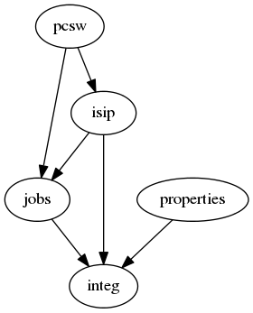

20130808 (Thursday, 08 August 2013)¶
Added the ordering model meta option to contacts.Person.Meta
Cleaned up some dependency issues between different lino_welfare apps. Moved pcsw.UsersWithClients to integ.UsersWithClients, pcsw.IntegClients to integ.Clients.

All this is not yet perfect. TODO: convert all App.verbose_name to their translations on startup? store the App class object in Site.modules.
Find an appointment¶
The new virtual field find_appointment in
lino_welfare.modlib.reception.models.Clients
is cool.
It required some subtle javascript enhancements
for CalendarPanel.
- Replaced the one global Lino.eventStore and Lino.calendarStore by instance variables ot Lino.CalendarApp.
- possibility to call the calendar of another user via an action button using subst_user
- new url variable URL_PARAM_PROJECT is used in order to have new appointments attributed to the correct client when created via this link.
- Show the ar.get_request_title() in the calendar view’s main window title, because otherwise it was difficult to guess whose calendar was being displayed.
cal.Calendar is now Sequenced. The sequence is important because the first calendar is default value for new events.
Action API¶
Another new virtual field checkin_for in
lino_welfare.modlib.reception.models.Clients
doesn’t yet work.
The API for rendering buttons with action calls is getting very
complex and intransparent and would deserve a cleanup.
But after 22 hours in two days I make a checkin and upgrade on lino-framework.org. Lino is probably not very stable, but an upgrade can help to discover bugs.